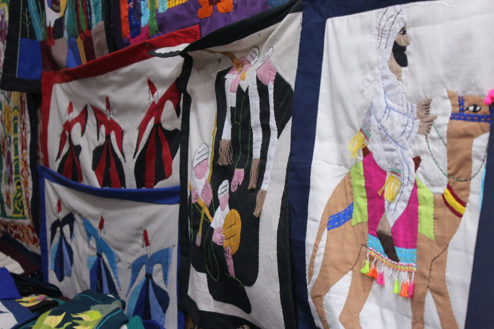
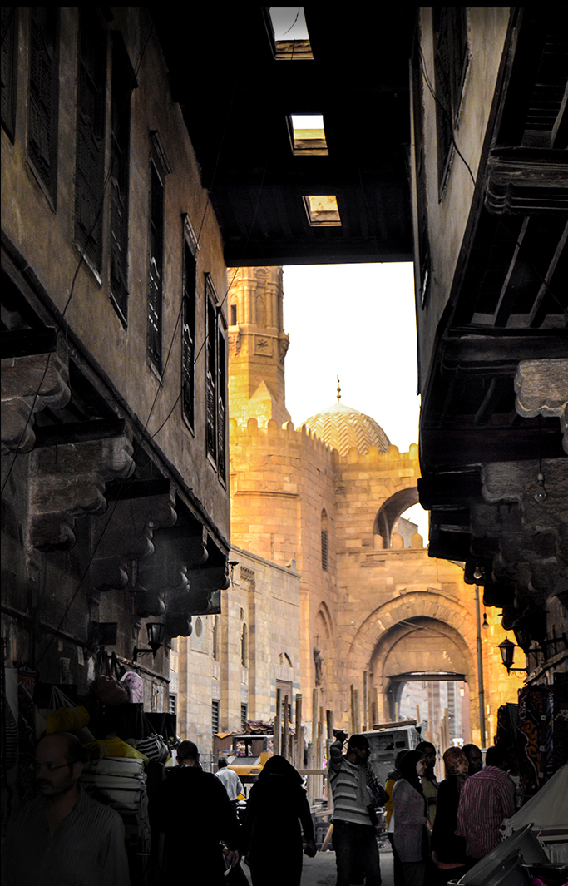
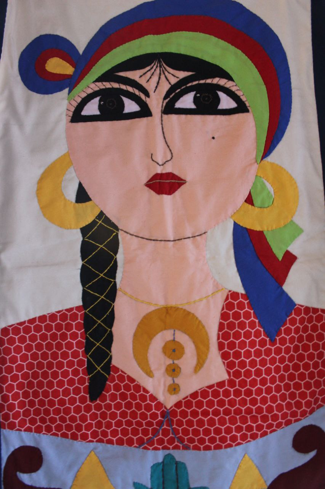
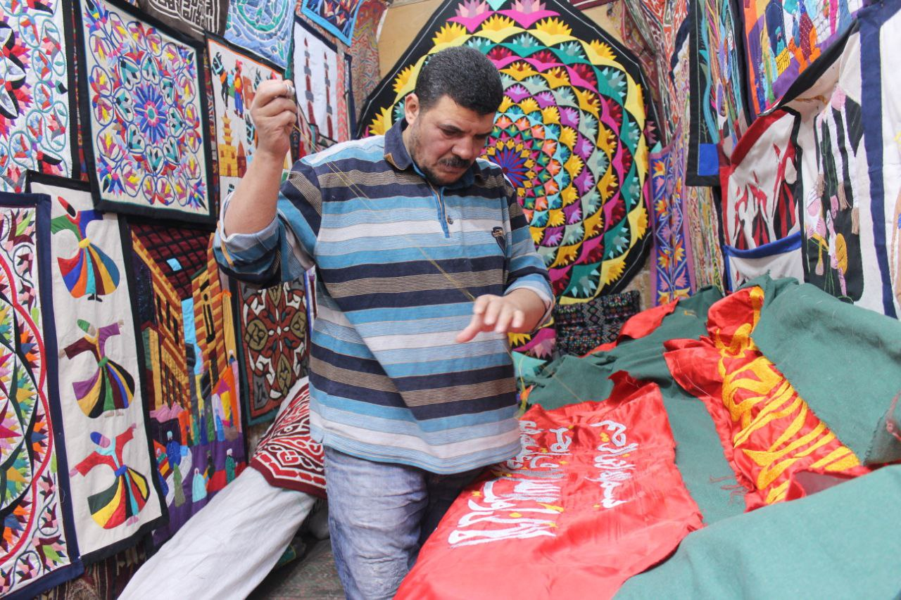
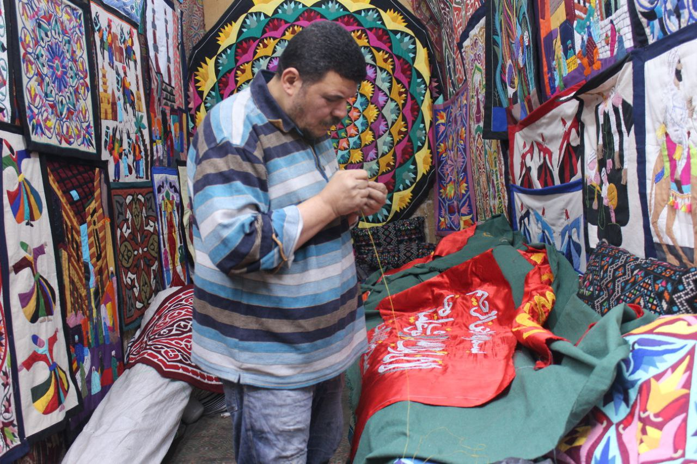

- "الخيامية" فن مصري أصيل تفردت به مصر عن باقي دول العالم، يمتد تاريخها من العصر الفرعوني لتصبح أكثر ازدهارا في العصر الإسلامي، حيث شهد العصران المملوكي والفاطمي قمة ازدهارها وترتبط الخيامية قديما بكسوة الكعبة المشرفة المطعمة بخيوط الذهب والفضة لتزدان بها الكعبة وظلت مصر ترسلها للحجاز في موكب متفرد مهيب يعرف باسم "المحمل"، وذلك حتى أواخر حقبة الستينيات من القرن الماضي.
- شارع الخيامية موجود منذ أيام الفاطميين يتكون من طابقين وقد كان باب زويلة يغلق ليلا ويفتح في النهار وكان يسمح للتجار بالدخول صباحا لمباشرة أعمالهم وأماكن الورش التي تتواجد فيها الآن كانت قديما إسطبلا للخيول والطابق الذي يعلوه كان أماكن لمبيت التجار الذين يأتون من المغرب والشام، وقد كان لهؤلاء التجار خيام يستخدمونها في سفرهم وكانوا يعملون على إصلاحها في تلك المنطقة، كما كان يحرص كل منهم أن تختلف خيمته عن الخيام الأخرى ومن هنا بدأت مهنة الخيامية.
- يحكى التاريخ عن أشهر خيام نصبت في مصر، وهي الخيام التي نصبت على طول الطريق من القاهرة إلى بغداد إبان رحلة زفاف الأميرة قطر الندى ابنة خمارويه التي كانت مضرب المثل في كل العصور بالترف والبذخ؛ كما تكثر إقامة الصوانات في المولد من الخيامية، مثل مولد النبي الذي يأتيه الكثيرون بصوانات صغيرة متنقلة للأراجوز وفن التنورة، كما تقام موائد الرحمن الملونة بالزينة والفوانيس بالخيام في الشهر الكريم.
- وصف مجدي مهران أشهر صانع للخيامية، الذي يجلس منكبا بالإبرة والخيط وتتراص حوله الخيام التي انتهى منها وكذلك المفارش المخصصة لتزيين المنزل وكافة صنوف الزينة الأخرى عمل مهران في مهنة الخيامية وهو في السابعة من عمره، توارثها مثل غيره الكثير من العاملين أبا عن جد، لم يرث عم مهران المهنة فقط بل ورث تقدير ذاته لها مبينا: هذه المهنة مذكورة في القرآن، فالله سبحانه وتعالى قال: حور مقصورات في الخيام هكذا عبر مهران عن قيمة مهنته وحبه لتزيين الشوارع بها خاصة في شهر رمضان والتي لا تخلو الأجواء الرمضانية منها.
- أوضح محمد برعي أحد العاملين بهذه المهنة، أنها تبدأ برسم التصميم الذي سيتم تنفيذه على القماش وغالبا ما يستخدم قماش التيل لأنه سميك ثم يقوم بتخريم الرسم وتوضع بودرة مخصصة لطبع الرسم على القماش حتى يقوم الفنان بعملية التطريز، إذ يقوم الفنان بقص وحدات القماش وتطريزها مع بعضها البعض على حد وصفه، وغالبا ما تكون التصميمات إما فرعونية أو إسلامية هذا بالإضافة إلى الآيات القرآنية والمناظر الطبيعية أو الرقصات النوبية والتراث المصري القديم بكل أشكاله كما أشار إلى أن أول شيء لابد أن يتعلمه الصبي الجديد على المهنة هي
- كيفية لضم الإبرة وأن يبدأ بالرسم على قماش التيل الذي يتميز بسمكه وقوته ومن ثم يقوم العامل بتزيين الرسمة بقطع القماش الملونة حيث تقص وحدات القماش وحياكتها مع بعضها البعض وغالبا ما تكون التصميمات عاكسة للأشكال الفرعونية والإسلامية المتمثلة في الخط العربي الذي يعكس آيات قرآنية كريمة وحديثا أشكالا هندسية أو زهوراً أو مناظر طبيعية لافتة، والتي تتطلب سرعة فائقة ودقة حتى يستطيع صانع اللوحة الانتهاء منها بسرعة فقد تتطلب قطعه القماش الصغيرة أياما وشهورًا للانتهاء منها .
- وأضاف عم على سليمان صاحب إحدى الورش القديمة أن الحرفة مهددة بالانقراض، لأنها تحتاج إلى صبر طويل ووقت لعمل قطعة خيامية طولها متر، كما أنه تعلم هذه المهنة وهو في سن الرابعة عشرة ومازال يعمل بها حتى الآن. وأن أدواته لا تعد مجرد إبرة وخيط وقماش ولكنه يستطيع أن يخرج بها لوحة بديعة من الفن المصري الأصيل.
- وأكد محمد برعي ومحسن فتوح أقدم صناع فن الخيامية بمنطقة الغورية أن المهنة تم توارثها في العائلة على مدار نصف قرن وأكثر، ولكن الجيل الحالي هو الوحيد الذي رفض أن يتعلمها والعمل بها وهذا سبب رئيسي لتراجع المبيعات عن أي وقت مضى، فذلك الجيل لا يرى أي شيء ممتع في الخيامية عكس الجميع، والسبب الثاني لعدم توريث المهنة لأولادهم هو عدم الربح الكافي لتكفي الحاجات الأساسية للحياة وفي هذه الظروف خصيصا. وأكدا أن السياح أيضاً أصبحوا لا يهتمون بها، ما أثر عليهم بشكل كبير جداً والخسائر لاحقتهم من شتى الجوانب مشيرا إلى أن اهتمام الرئيس عبد الفتاح السيسي بالحرف اليدوية بث في قلوبهم الأمل من جديد أملا في إنقاذ المهنة من الانقراض.
- وأوضح أن الأسعار على حسب الوقت المستغرق في الصناعة، على سبيل المثال لو العمل استغرق ساعات يمكن أن تبدأ التكلفة من خمسين جنيها، وهناك أشغال يمكن أن تستغرق شهورا وأسابيع وثمنها يبدأ من 500 حتى عشرة آلاف جنيه. ومع إيماننا بالله والصبر على المعيشة وقلة السياحة، بدأ المصريون في الاهتمام بهذا الفن عن طريق طلب العديد من الأوردرات خصيصا لهم وزيادة حركات البيع والشراء بين تجار الخيامية والمصريين أكثر من الأجانب. ورغم أن منطقة الغورية وتحت الربع وشارع الخيامية أصبحت غير مألوفة للأجانب إلا أنه عندما زارت مارجريت تاتشر رئيسة الوزراء البريطانية مصر في القرن الماضي طلبت أن تزور منطقة الخيامية وعندما سئلت لماذا هذه المنطقة بالذات؟ أجابت: لديكم عمال مهرة وصناعة خطيرة لو كانت لدينا في بريطانيا كنا ربحنا منها الملايين.